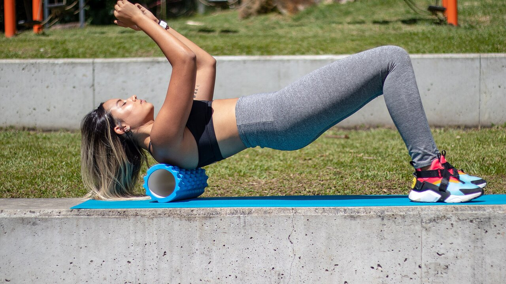

Фоам-роллер: работает ли он? Данные 8 работ
В разошедшемся по сети посте выстроены три «нет» про фоам-роллер: он не разрушает фасцию, не улучшает результат, не предотвращает травмы. Остаётся польза для мышечной боли и подвижности — но «временная». Я разобрал восемь проиндексированных работ, чтобы проверить эти три «нет». Два держатся отлично, третье слабее, чем звучит. А часть про подвижность уже устарела: там есть цифра, которой в посте нет, и она меняет то, как роллер стоит использовать.

Коротко
- Роллер не меняет жёсткость миофасциальной ткани: метаанализ, измерявший это объективными приборами, не находит никакого эффекта (Glänzel et al., 2023). «Растворяющейся фасции» приборы не видят.
- На результат эффекты крошечные: перед тренировкой роллер улучшает спринт на 0,7 % и гибкость на 4 %, а на прыжок и силу влияние пренебрежимо (Wiewelhove et al., 2019). Но он ничего и не ухудшает — вот в этом и есть настоящее преимущество.
- Самый крупный эффект из всех — на мышечную боль: +6,0 %, d = 0,47, единственное значение во всей литературе, приближающееся к среднему размеру эффекта (Wiewelhove et al., 2019). Но нужна доза: минимум 90 секунд на мышечную группу (Hughes и Ramer, 2019).
- «Только временный прирост подвижности» — уже неправда. Если катать регулярно дольше 4 недель, прирост подвижности становится устойчивым (ES = 0,82) по сравнению с контрольными группами (Konrad et al., 2022).
- По травмам чистого ответа нет: единственное профилактическое исследование объединяет роллер и силовую работу, поэтому сказать что-либо про роллер отдельно не может (Desai et al., 2023).
«Разбивает фасцию»: здесь пост прав
Это самое повторяемое в залах утверждение и самое лёгкое для опровержения, потому что кто-то взял и измерил.
В 2023 году бразильская группа собрала двадцать исследований, в которых объективными приборами оценивали, что происходит с тканями после сессии с роллером: жёсткость фасции корпуса и бедра, мышечная жёсткость бедра и голени, сила колена и стопы. Отдельные работы сообщали о снижении жёсткости — две по фасции, пять по мышце, — но когда данные сводят в метаанализ, эффект на миофасциальную жёсткость исчезает.
Стоит добавить оговорку, которую делают сами авторы: по методу GRADE уверенность в доказательствах низкая, то есть более качественные исследования могут изменить картину. «У нас нет доказательств, что это происходит» — не то же самое, что «доказано, что этого не происходит». Но пока: если вам продавали роллер как прибор, перестраивающий соединительную ткань, у этой продажи нет оснований.
Самое признанное объяснение того, что вы чувствуете под роллером, — нервное, а не механическое: меняется переносимость дискомфорта и восприятие, а не структура. Это немало — но это другое.
Результат: дело не в том, что он улучшается
Здесь пост говорит правду, но ставит неверный акцент.
Опорный метаанализ — 2019 года: двадцать одно исследование, разделённые на тех, кто катал до (четырнадцать работ), и тех, кто катал после тренировки (семь работ). Цифры до тренировки:
- спринт +0,7 % (d = 0,28)
- гибкость +4,0 % (d = 0,34)
- прыжок −1,9 % (d = 0,09)
- сила +1,8 % (d = 0,12)
После тренировки, как стратегия восстановления:
- спринт +3,1 % (d = 0,34)
- сила +3,9 % (d = 0,21)
- воспринимаемая мышечная боль +6,0 % (d = 0,47)
- прыжок −0,2 % (d = 0,06)
d в 0,1 или 0,2 — это на практике шум. Самое высокое значение во всей таблице, 0,47 по мышечной боли, едва дотягивает до среднего размера.
Но посмотрите на знак этих чисел. Ни одно из них не отрицательно сколько-нибудь существенно. Именно здесь фоам-роллер отличается от другого, что мы делаем перед тренировкой: длительная статическая растяжка может снизить силу и мощность в последующей сессии, роллер — нет. Метаанализ 2023 года подтверждает это напрямую: никакого эффекта на изометрическую силу, эксцентрический момент или скорость развития усилия, с единственным положительным показателем — концентрическим моментом разгибателей колена (Glänzel et al., 2023).
В переводе: фоам-роллер — не способ стать сильнее. Это способ лучше двигаться перед сессией без платы в рабочих весах. Если в разминке вам нужно добрать несколько градусов подвижности, чтобы сделать глубокий и чистый присед, инструмент подходящий. Если вы ждёте более высокого максимума — нет.
Подвижность: цифра, которую пост упускает
То, что прокат роллером увеличивает амплитуду движения, установлено. Самый надёжный многоуровневый метаанализ — двадцать шесть исследований хорошего методологического качества — измеряет крупный острый эффект: SMD 0,74 (95 % доверительный интервал 0,42–1,01) по сравнению с бездействием (Wilke et al., 2020). Второй метаанализ по тринадцати исследованиям приходит почти к той же цифре, d = 0,76 (0,55–0,98) (Skinner et al., 2020).
Два уточнения, которые почти нигде не встретишь.
Первое: по сравнению с растяжкой роллер не выигрывает. SMD −0,02 (от −0,73 до 0,69): идентично. То есть фоам-роллер — это альтернатива растяжке в разминке, а не обязательная добавка. Если вы уже делаете мобилити, добавлять десять минут роллера ради «большей подвижности» доказательствами не подкреплено.
Второе, и оно разбирает «только временно»: в 2022 году вышел метаанализ по одиннадцати исследованиям и 290 участникам, которые катали роллер как тренировку, неделями. Результат: умеренный эффект на подвижность суставов по сравнению с контрольными группами, ES = 0,82 (95 % ДИ 0,33–1,32; p = 0,001). И с точным условием: протоколы дольше 4 недель работают лучше, чем до 4 недель (p = 0,049).
В том же анализе спрятана практическая деталь: прирост появляется, когда катают бицепс бедра и квадрицепс, тогда как прокат голени не улучшил тыльное сгибание стопы. Если ваша проблема — голеностоп, не пускающий вас вниз в приседе, роллер на икре, скорее всего, неверный способ её решать.
Последнее замечание из анализа модераторов у Wilke: длительность, скорость и индекс массы тела результат не меняют, но у мужчин эффект меньше (p < 0,05).
Мышечная боль: самый надёжный эффект, и у него есть доза
Это единственный пункт, где фоам-роллер даёт нечто похожее на реальную пользу, и единственный, по которому у нас есть указание на дозировку.
Систематический обзор 2019 года разделил исследования по цели: из восьми работ, измерявших боль и крепатуру, семь сообщают о краткосрочном снижении. А выявленный порог — 90 секунд на мышечную группу, без обнаруженного верхнего предела. Ниже этой дозы результаты становятся непостоянными. По подвижности тот же обзор сдержаннее (десять исследований из семнадцати, с очень разнородными результатами), а по результативности не находит ничего.
Обзор 2024 года по двадцати пяти исследованиям и 517 спортсменам приходит туда же другим путём: улучшается восприятие восстановления и снижается отсроченная мышечная болезненность, без потерь в максимальной силе и мощности.
Обратите внимание: речь почти всегда о воспринимаемой боли, а не о быстрее починенном мышечном повреждении. Роллер делает так, что вы чувствуете себя лучше; доказательств, что он сокращает сроки восстановления ткани, нет. Если цель — вернуться к тренировкам раньше, гораздо важнее сон, грамотно дозированная нагрузка и то, что вы кладёте в тарелку на вынужденной паузе.
Травмы: у вопроса пока нет ответа
Пост утверждает, что фоам-роллер не предотвращает травмы. Вывод разумный, но основание более хрупкое, чем кажется, и об этом стоит сказать.
Единственная серьёзная работа по теме — 2023 года: 433 бегуна-любителя, восемнадцать недель, одна группа делала общую силовую работу плюс фоам-роллинг дважды в неделю, контрольная продолжала как обычно. Общий результат: 27,1 % травм в контроле против 23,0 % в группе вмешательства, разница незначимая (лог-ранговый критерий p = 0,31).
Но затем авторы заглянули внутрь группы вмешательства, разделив её по приверженности. У тех, кто следовал программе регулярно, вероятность травмы была на 85 % ниже (отношение рисков 0,15; 95 % ДИ 0,05–0,46), а травма наступала в среднем на 57 дней позже.
Три причины не использовать эту цифру как довод в пользу роллера. Первая: вмешательство — это сила плюс фоам-роллинг вместе, а у силовой работы уже есть надёжные доказательства в профилактике травм; заслугу нельзя приписать роллеру. Вторая: исследование наблюдательное, не рандомизированное. Третья, самая весомая: сравнивать «тех, кто был регулярен» со всей контрольной группой — несбалансированное сравнение: тот, кто выдерживает программу восемнадцать недель, обычно лучше спит, лучше дозирует нагрузки и в целом осторожнее. Это классическое преимущество приверженных, а не обязательно вмешательства.
Поэтому честная формулировка не «он не предотвращает травмы», а: нет ни одного исследования, которое изолировало бы фоам-роллер и показало эффект на травмы. Кто продаёт вам его именно для этого, выходит за рамки данных.
Что на самом деле говорит наука
- Подтверждено — Фоам-роллинг не меняет жёсткость миофасциальной ткани, измеренную объективными приборами (Glänzel et al., 2023; уверенность в доказательствах низкая).
- Подтверждено — Эффекты на результативность пренебрежимы: от d = 0,06 до d = 0,34 по спринту, прыжку и силе (Wiewelhove et al., 2019).
- Подтверждено — Роллер не ухудшает силу, эксцентрический момент и скорость развития усилия: в отличие от длительной статической растяжки, его можно включать в разминку без потерь (Glänzel et al., 2023; Martínez-Aranda et al., 2024).
- Подтверждено — Он снижает воспринимаемую мышечную боль, с самым крупным эффектом во всей литературе по теме (d = 0,47) и минимальной дозой 90 секунд на мышцу (Wiewelhove et al., 2019; Hughes и Ramer, 2019).
- Требует уточнения — «Увеличивает подвижность» верно, но не больше, чем растяжка (SMD −0,02): это альтернатива, а не добавка (Wilke et al., 2020).
- Опровергнуто — «Прирост подвижности только временный»: при регулярном катании дольше 4 недель прирост становится устойчивым, ES = 0,82 (Konrad et al., 2022).
- Опровергнуто — «Работает на всех зонах»: на голени он не улучшил тыльное сгибание стопы (Konrad et al., 2022).
- Непроверяемо — Эффект на травмы: единственное доступное исследование объединяет роллер и силовую работу, носит наблюдательный характер, а положительный результат получен в подгруппе по приверженности (Desai et al., 2023).
Как это применить
- Ставьте его в разминку, а не в заминку. Это прямой вывод метаанализа 2019 года: доказательства оправдывают использование как разминочной активности скорее, чем как инструмента восстановления. Две-три минуты на нужные группы, затем переходите к подводящим подходам.
- Если используете против боли, доводите до 90 секунд на мышцу. Ниже этого порога результаты становятся непостоянными. Это разница между рассеянным прокатом и дозой.
- Не складывайте его с растяжкой в надежде на двойной выигрыш. Он делает то же самое. Выберите то, что вам удобнее, а сэкономленное время потратьте на настоящие подводящие подходы.
- Для голеностопа смените инструмент. Прокат голени в исследованиях не улучшил тыльное сгибание: если проблема в глубоком приседе, работайте над амплитудой под нагрузкой и положением стопы.
- Не ждите защиты от травм. Надёжные доказательства есть у прогрессирующей силовой работы. Если нужна общая картина по дозированию подходов, весов и отдыха, я изложил её здесь.
- Проверьте на себе. Средние эффекты малы и изменчивы: единственный способ понять, нужен ли вам роллер, — смотреть на собственные цифры до и после его добавления в течение нескольких недель.
Попробуйте Nurvan — разминка, которая что-то меняет
Фоам-роллер не заставит вас поднять больше. Подводящие подходы — заставят: в Nurvan они предлагаются автоматически на основе запланированного веса, так что к рабочему подходу вы приходите готовым, а не холодным. А поскольку каждый подход записывается с весом, повторениями и RIR (сколько повторений оставалось в запасе), через месяц вы увидите чёрным по белому, сдвинула ли добавленная мобилити-рутина ваши цифры — или просто удлинила разминку. Попробуйте Nurvan
Частые вопросы
Фоам-роллер до или после тренировки?
Доказательства больше в пользу использования до: вы добираете несколько градусов подвижности, не теряя силу в сессии. После тренировки единственный заметный эффект — снижение воспринимаемой мышечной боли, что, однако, не равно более быстрому мышечному восстановлению.
Сколько времени катать каждую мышцу?
Для эффекта на мышечную боль порог, выявленный в исследованиях, — минимум 90 секунд на мышечную группу, без обнаруженного верхнего предела. Для острой подвижности длительность, похоже, мало меняет результат.
Правда ли фоам-роллер разбивает спайки фасции?
Нет, по крайней мере не по данным приборов, которые её измеряют: доступный метаанализ не находит никаких изменений жёсткости миофасциальной ткани после сессии. Меняется прежде всего переносимость дискомфорта и восприятие, а не структура ткани.
Что лучше в разминке: фоам-роллер или растяжка?
Для увеличения амплитуды движения они равноценны (SMD −0,02 в прямом сравнении). Выбирайте по удобству и времени: ни один не превосходит другой, и ни один не заменяет подводящие подходы со штангой.
Вредно ли катать, если мышца сильно болит?
В исследованиях роллер снижает воспринимаемую боль и не ухудшает результативность, но давление нужно дозировать по переносимому дискомфорту. Если боль острая, точечная или не похожа на обычную послетренировочную болезненность, покажитесь специалисту, вместо того чтобы продолжать с роллером.
Читайте также
- Сколько повторений нужно для массы — как дозировать переменные, которые действительно двигают результат.
- Что есть при травме — питательная сторона восстановления, с цифрами.
- Тренировка силы, мышц и кардио вместе — как собрать неделю, чтобы одно не съедало другое.
Источники
- Wiewelhove T, Döweling A, Schneider C, Hottenrott L, Meyer T, Kellmann M, Pfeiffer M, Ferrauti A, 2019. A Meta-Analysis of the Effects of Foam Rolling on Performance and Recovery. Frontiers in Physiology 10:376. PMID 31024339 · DOI 10.3389/fphys.2019.00376
- Wilke J, Müller AL, Giesche F, Power G, Ahmedi H, Behm DG, 2020. Acute Effects of Foam Rolling on Range of Motion in Healthy Adults: A Systematic Review with Multilevel Meta-analysis. Sports Medicine 50(2):387-402. PMID 31628662 · DOI 10.1007/s40279-019-01205-7
- Konrad A, Nakamura M, Tilp M, Donti O, Behm DG, 2022. Foam Rolling Training Effects on Range of Motion: A Systematic Review and Meta-Analysis. Sports Medicine 52(10):2523-2535. PMID 35616852 · DOI 10.1007/s40279-022-01699-8
- Glänzel MH, Rodrigues DR, Petter GN, Pozzobon D, Vaz MA, Geremia JM, 2023. Foam Rolling Acute Effects on Myofascial Tissue Stiffness and Muscle Strength: A Systematic Review and Meta-Analysis. Journal of Strength and Conditioning Research 37(4):951-968. PMID 36227232 · DOI 10.1519/JSC.0000000000004385
- Hughes GA, Ramer LM, 2019. Duration of Myofascial Rolling for Optimal Recovery, Range of Motion, and Performance: A Systematic Review of the Literature. International Journal of Sports Physical Therapy 14(6):845-859. PMID 31803517
- Skinner B, Moss R, Hammond L, 2020. A systematic review and meta-analysis of the effects of foam rolling on range of motion, recovery and markers of athletic performance. Journal of Bodywork and Movement Therapies 24(3):105-122. PMID 32825976 · DOI 10.1016/j.jbmt.2020.01.007
- Martínez-Aranda LM, Sanz-Matesanz M, García-Mantilla ED, González-Fernández FT, 2024. Effects of Self-Myofascial Release on Athletes' Physical Performance: A Systematic Review. Journal of Functional Morphology and Kinesiology 9(1):20. PMID 38249097 · DOI 10.3390/jfmk9010020
- Desai P, Jungmalm J, Börjesson M, Karlsson J, Grau S, 2023. Effectiveness of an 18-week general strength and foam-rolling intervention on running-related injuries in recreational runners. Scandinavian Journal of Medicine & Science in Sports 33(5):766-775. PMID 36630577 · DOI 10.1111/sms.14313
Библиографические ссылки получены через PubMed. Отправная точка: пост Built With Science (@builtwithscience) от 2 сентября 2026 года, оригинальный пост. Ни текст, ни изображения поста не воспроизводились: тема написана с нуля на основе первичных источников.
Джаммария Лои — основатель Nurvan. Тренируется с отягощениями с 2012 года, работает персональным тренером и коучем с сертификацией FIPE с 2013 года и выступает в пауэрлифтинге на национальном уровне с 2018 года. Каждая статья, которую он подписывает, начинается с научных исследований и заканчивается тем, что действительно работает в зале.
Примечание: информационный материал, не заменяет мнение врача или квалифицированного специалиста. Если у вас точечная боль, не похожая на обычную послетренировочную болезненность, покажитесь специалисту, прежде чем продолжать с роллером.